2019 – 2026 DWG
Small Designs, Woodworking & Published Models
Everyday engineering: a magnetic-hinge laptop stand, a guided knife sharpener, a replacement headset clasp users rate 5 stars, camper keder-rail accessories, a fireplace surround, a SkillsUSA car and more.
- Product design
- FDM
- Woodworking
- Printables
- Thingiverse
- CAD timelapses

Laptop stand (2022)
A wood laptop stand on printed hinges. Each hinge turns on 10 mm bearings and an axle, with 10 × 2 mm magnets and heat-set inserts for the hardware.

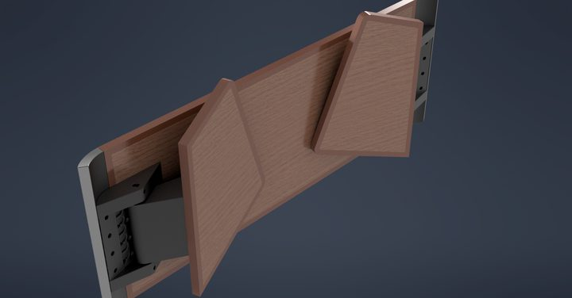

Guided knife sharpener (2021)
A guided sharpener that keeps the stone at a consistent angle to the blade. The stone holder rides an 8 mm guide rod through a swivel, above an aluminum-extrusion base that clamps the knife. Published on Thingiverse and Printables.


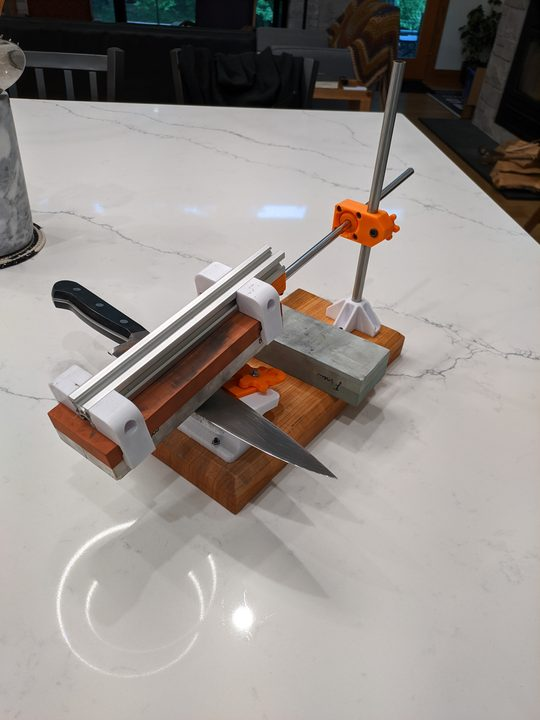
HyperX Cloud headset clasp (2025)
The plastic buckle on HyperX Cloud 2 and Cloud Alpha headsets often breaks. My replacement is my most-downloaded model on Printables.

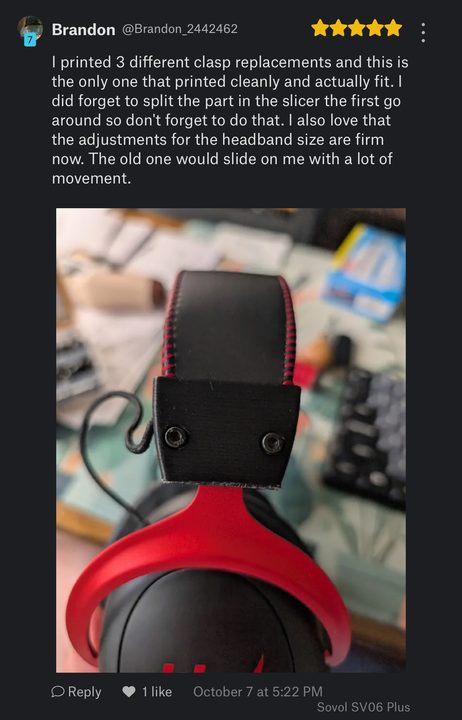

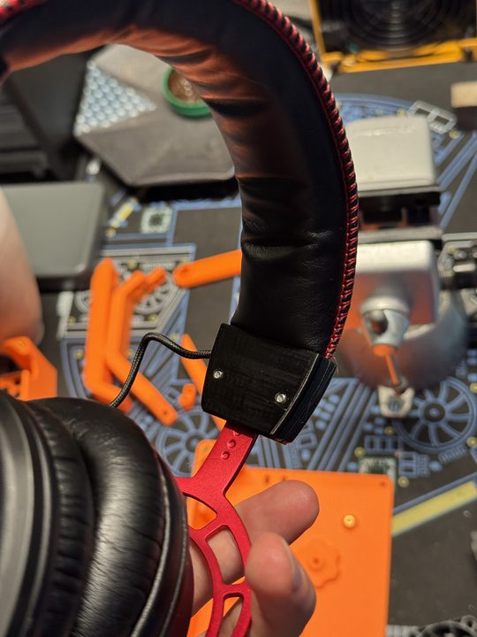

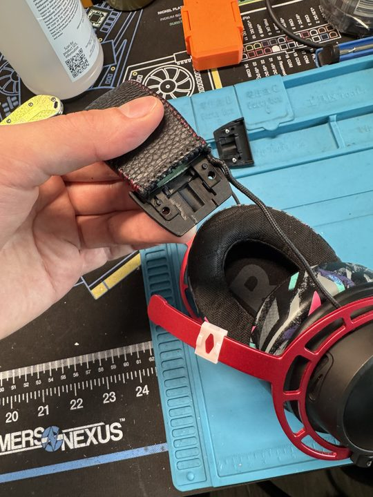
Vertical GPU mount and modular storage (2024)
A vertical GPU mount that fits over any ATX motherboard, and parametric magnetic prism containers (3-, 4-, 6- and 8-sided, in several heights) printed in vase mode on the Ender farm.

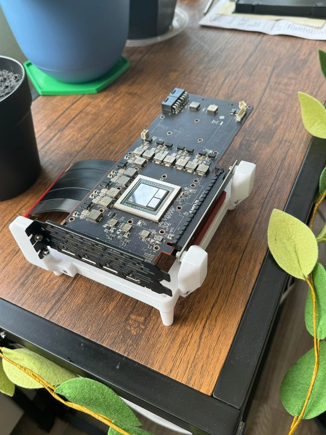

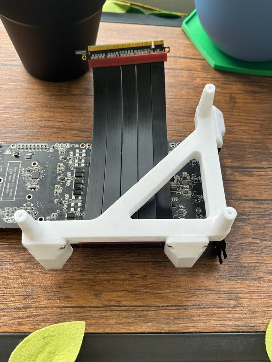

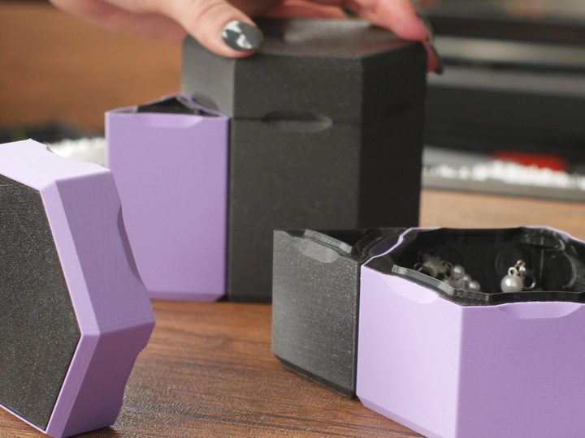

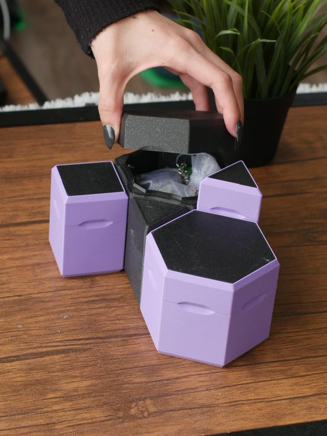
Keder rail attachments for campers (2026)
A set of printed hooks, posts and tabs that lock into the keder (awning) rail on campers on a common rail base, plus a matching keder rail wrench. Designed as a product line and not yet listed for sale.


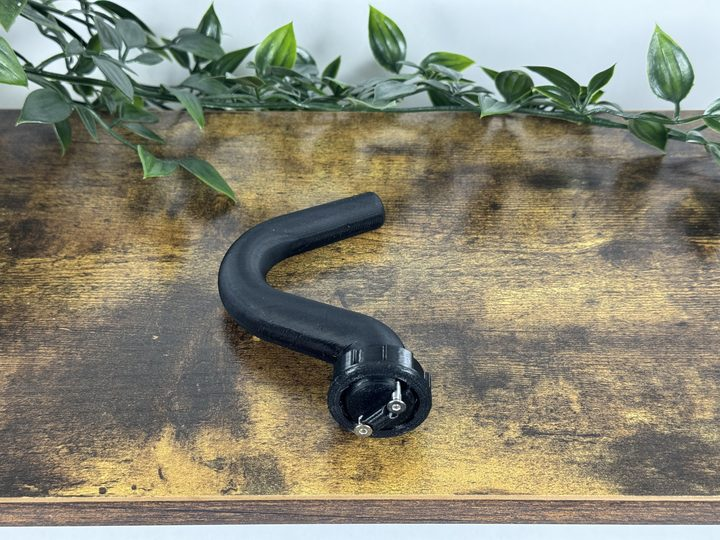

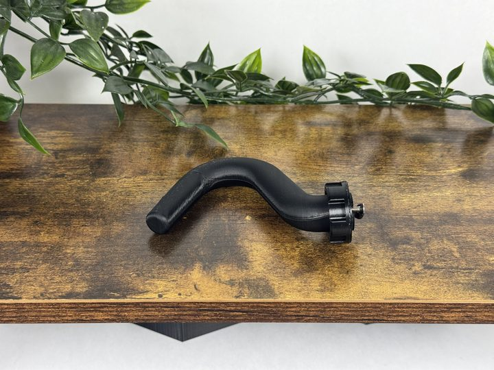

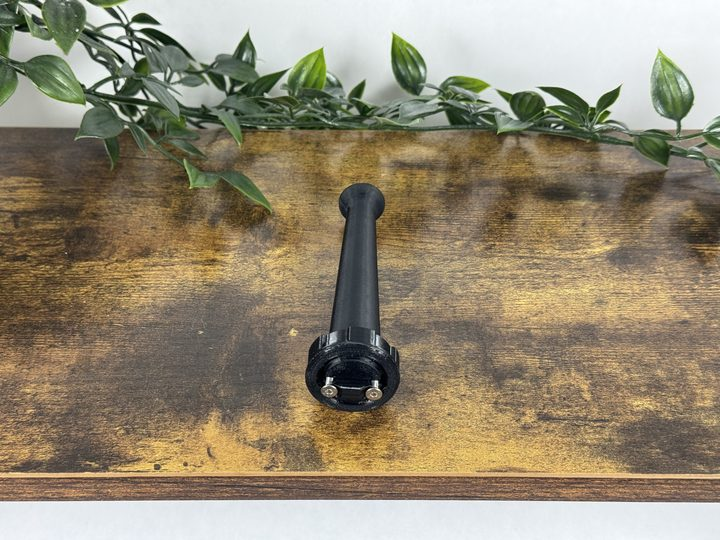

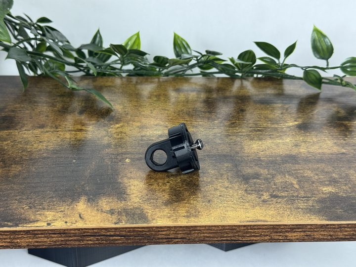


Fireplace surround and mantel (2021)
A fireplace surround and mantel I built: stone veneer framed by timber posts and a mantel milled in the shop.


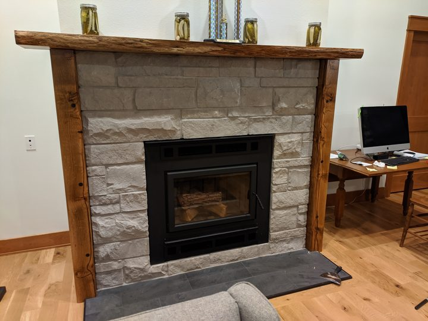

SkillsUSA rubber-band car (2025)
CAD timelapses, a printed hinge, cable chains and a camera gimbal
Parametric cable chains in 10 × 10, 15 × 15, 20 × 20 and 20 × 60 mm sizes, plus a link that carries PTFE tube, used on my printers and published on Printables, plus a carbon-tube camera gimbal on BGM5208 brushless gimbal motors.